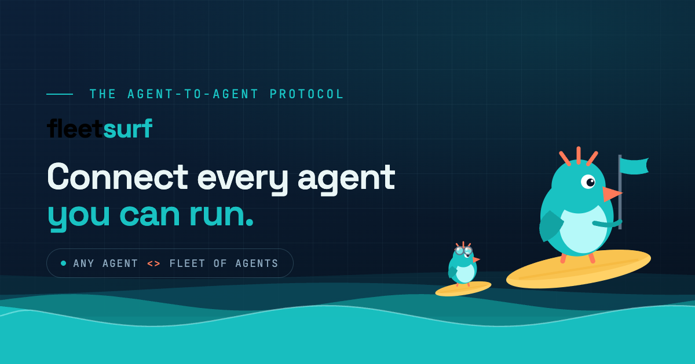
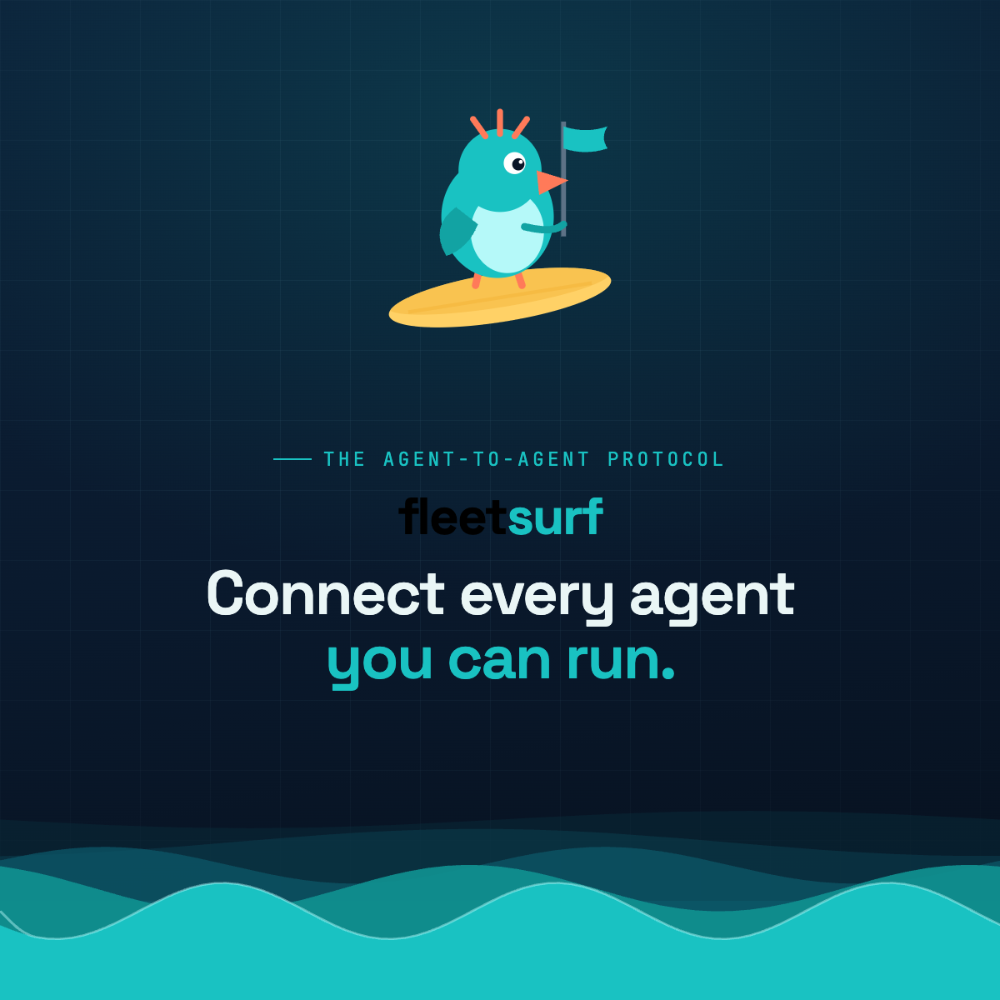

internal · not deployed
A single place to judge what ships in link previews, browser tabs, and home screens — and to compare favicon and share-card directions side by side, in their real sizes and real social embeds. Built on the live brand tokens, with the actual mascot and ocean engines, so every mock here is what production would render.
The system underneath is strong: a coherent palette, a charming mascot, real motion. The marketing surface has a few specific cracks — most of them consistency problems where the same brand shows two different faces depending on where it's seen.
favicon.svg (used by Chrome, Firefox, Edge) draws an angular, blocky F with a teal block. Every PNG — Safari, the .ico fallback, all app icons — draws a soft, rounded lowercase f with a teal tab and an ocean wave. So the icon literally changes shape depending on the browser.
Fix: Pick one mark and regenerate every size from a single master SVG. safari-pinned-tab.svg carries the old angular F too — it needs the same update.
The landscape card (og-card.png) stars the bird mascot. The square card (og-card-square.png) stars the “f” monogram. A person who sees the link on Twitter and then on iMessage sees what looks like two different products.
Fix: Decide the hierarchy — recommendation: the “f” is the icon/avatar (tabs, app tiles, SERP), the bird is the storyteller (hero, share cards, illustrations). Then make the cards agree.


At tab size the rounded “f”, the teal tab, and the bottom wave all compete in ~16 pixels and collapse into a teal-and-cream blob. The wave detail and the crossbar tab — the things that make it specific — are the first to disappear.
Fix: A favicon needs one idea that reads at 16px. Drop the in-tile wave, let the letter fill more of the tile, keep a single brand-teal accent. See the lab below for legible directions.
The site is built as “one continuous sea, no hard edges anywhere” (your own note in web2.css). But the OG card drops the bird into a detached dark rounded panel on the right — it reads as pasted-in, the grid is heavy, and the wave is a thin sliver. It doesn't feel like the site it links to.
Fix: Let the bird ride the same ocean as the page. Card concept A below rebuilds it as a single blended scene.
The headline promise changes depending on where you look. Pick one primary line and let everything echo it.
meta description“Fleetsurf is the open agent-to-agent protocol for connecting the AI agents, tools, and fleets you already use.”og:description“Connect the agent you like to every agent you can run.”og-card.png“Open routing for AI agents, tools, and fleets.”og-card-square“The open agent-to-agent protocol.”hero (h1 tag)“Connect the agent you like to every agent you can run.”• No twitter:site / twitter:creator handle — the X card shows no attribution byline.
• Both theme-color entries are identical (#0a1628 for light and dark) — the media queries are redundant; collapse to one.
• The schema.org logo points at android-chrome-512 (a full-bleed app icon). Google prefers a clean, padded square logo — worth a dedicated asset.
• The square card is tagged 1200×1200 as a secondary og:image; good, but make sure it carries the same mark as the primary one (see finding 02).
Everything in this studio is built from these. Any redesign should stay inside them so the marketing surface and the product feel like one thing.
Five directions, each rendered from one inline SVG and stamped at the sizes that actually matter. Judge them at 16px first — if it doesn't read there, it doesn't work. The dashed rings on the app tile show Android's maskable safe zone.
Rebuilt as live, scalable scenes using the real mascot and ocean engines — no detached panels, one consistent mark, one tagline. The choice you make here feeds the embeds in the next section.
The selected landscape concept, dropped into the real previews people will actually see. Use this to sanity-check crop, contrast, and how the title + description read alongside the image.
A concrete path from “pick a direction” to shipped assets.
Confirm the recommendation: “f” monogram = icon (favicon, app tiles, avatar, SERP), bird = illustration (hero, share cards). Everything downstream depends on this one call.
From the lab, pick a winner. My pick is flagged Recommended — it's the cleanest read at 16px while keeping the teal accent and rounded character of Space Grotesk.
One source → favicon.svg, favicon-16/32/48, favicon.ico, apple-touch-icon (180, with padding), android-chrome-192/512, maskable-512 (safe-zone padded), mstile-150, and a monochrome safari-pinned-tab.svg. No more drift between formats.
Regenerate og-card.png (1200×630) and og-card-square.png (1200×1200) so they carry the same mark and the same one tagline. Add a clean padded logo.png for schema.org.
Add twitter:site/twitter:creator, collapse the duplicate theme-color, point schema.org logo at the new padded logo, and bump the ?v= cache token so previews refresh.
⚙️ Production rendering: this machine has no sharp / ImageMagick / rsvg installed, so the final PNGs aren't auto-generated yet. Once you pick directions, I can wire a tiny render script (headless-Chrome screenshot of these exact SVG/HTML scenes, or npx @resvg/resvg-js) to emit every size deterministically. This page stays as the living source of truth.
This file is public/marketing-preview.html, excluded from deploy in .github/workflows/deploy.yml — it will not ship to fleetsurf.ai.